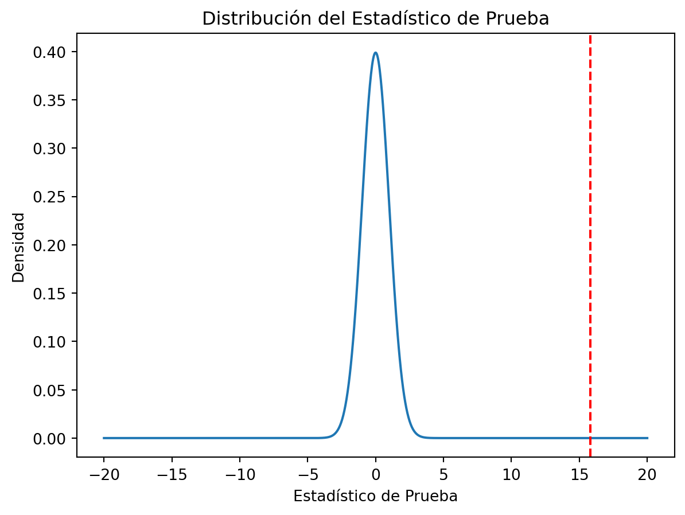
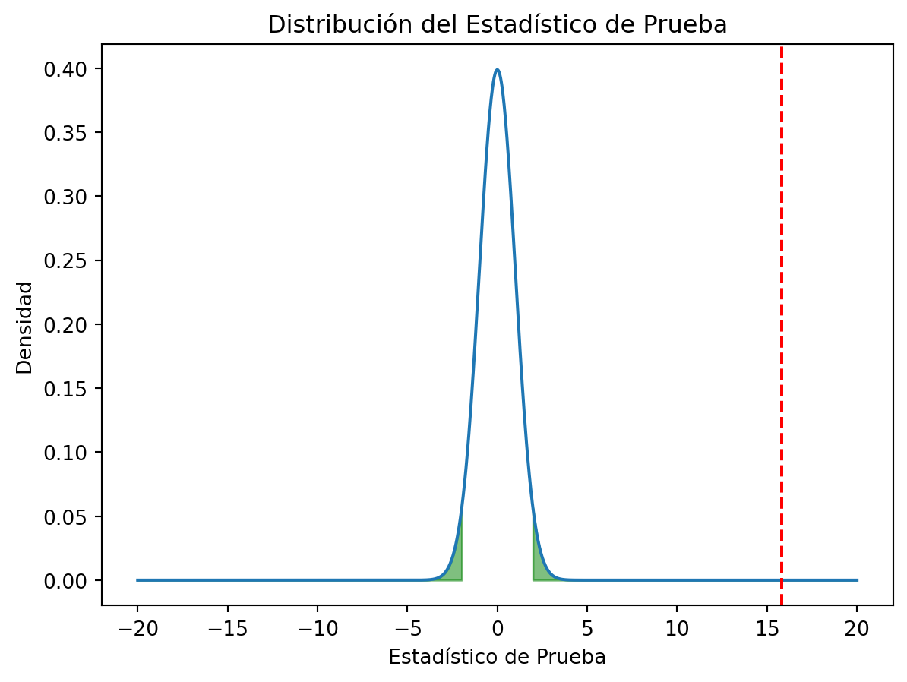
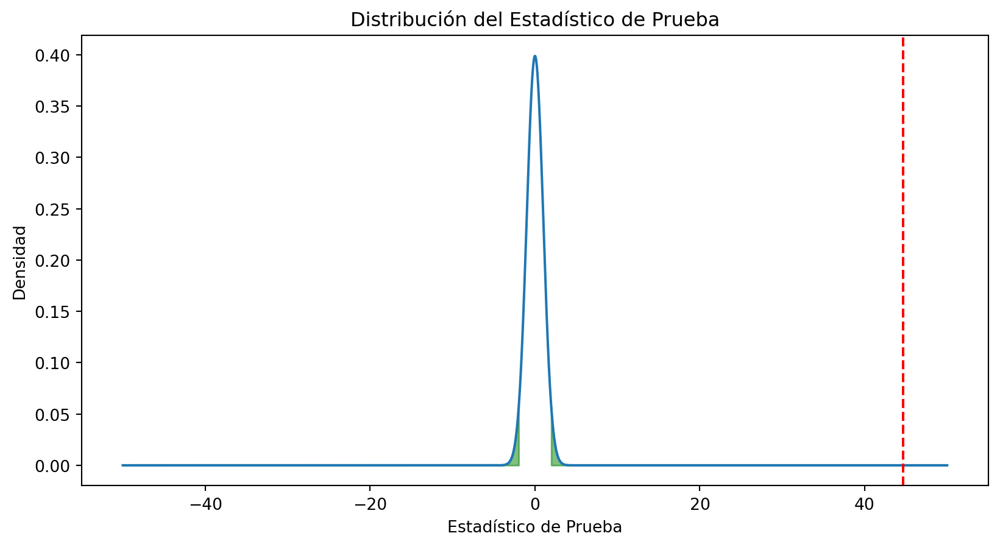
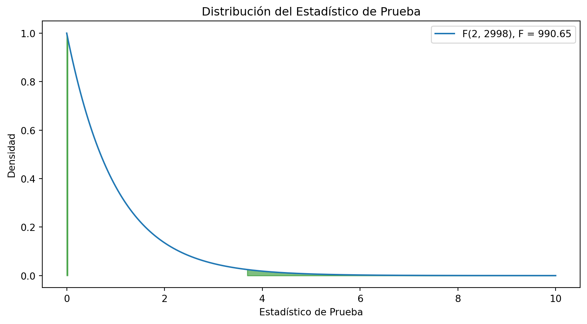

Código
El valor p es 0.0Dentro del quehacer de la ciencia, una de las tareas más comunes es la de probar hipótesis. En términos generales, una hipótesis es una afirmación que se hace sobre el valor de un parámetro poblacional. Por ejemplo, una hipótesis podría ser que la media de una población es igual a un valor específico. Para probar esta hipótesis, se recolecta una muestra de la población y se calcula la media muestral. Si la media muestral es muy diferente de la media hipotética, entonces se puede concluir que la hipótesis es falsa. En este caso, se dice que la hipótesis es rechazada. Por otro lado, si la media muestral es muy similar a la media hipotética, entonces se puede concluir que la hipótesis es verdadera. En este caso, se dice que la hipótesis es aceptada.
No debemos tomar tan a la ligera la decisión de rechazar o aceptar una hipótesis. Siempre existe la posibilidad de que la muestra que se recolectó no sea representativa de la población. Por lo tanto, es importante tener en cuenta el error que se comete al rechazar una hipótesis verdadera. Este error se conoce como error de tipo I. Por otro lado, también es importante tener en cuenta el error que se comete al aceptar una hipótesis falsa. Este error se conoce como error de tipo II. En general, se busca minimizar ambos errores. Sin embargo, es imposible minimizar ambos errores al mismo tiempo. Por lo tanto, se debe tomar una decisión sobre cuál de los dos errores es más grave. Esta decisión depende del contexto en el que se esté trabajando. Pero en general, se prefiere minimizar el error de tipo I.
Para probar una hipótesis, se sigue un procedimiento estándar.
Plantear un modelo base o hipótesis nula, normalmente es que el valor de un parámetro poblacional es igual a cero o que la diferencia entre parametros poblacionales es igual a cero. Se denota como \(H_0\).
Plantear un modelo alternativo o hipótesis alterna, que puede ser que el valor de un parámetro poblacional es diferente de cero o que la diferencia entre parametros poblacionales es diferente de cero. Se denota como \(H_1\).
Recolectar una muestra de la población y calcular el estadístico de prueba. Esto depende de la hipótesis que se esté probando, el tipo de datos que se tengan y el tamaño de la muestra.
Calcular el valor p. El valor p es la probabilidad de obtener un estadístico de prueba tan extremo como el que se obtuvo dado que la hipótesis nula es verdadera. Si el valor p es menor que un nivel de significancia predefinido, entonces se dice que hay evidencia para rechazar la hipótesis nula.
El valor p depende directamente de los datos y del procedimiento de su recolección. Por si mismo no es suficiente para tomar una decisión. Por lo tanto, es importante tener en cuenta el contexto en el que se está trabajando. Una medida auxiliar es el poder de la prueba. El poder de una prueba es la probabilidad de rechazar la hipótesis nula dado que la hipótesis nula es falsa. En general, se busca que el poder de la prueba sea lo más alto posible. Sin embargo, el poder de la prueba depende de varios factores, como el tamaño de la muestra, el nivel de significancia y la magnitud del efecto.
De mayor importancia que obtener valores p bajos es tener un buen diseño experimental. Un buen diseño experimental es aquel que permite obtener resultados confiables y válidos. Para ello, es importante tener en cuenta varios factores, como el tamaño de la muestra, la selección de la muestra, la recolección de los datos y el análisis de los datos. En general, se busca que el diseño experimental sea lo más simple posible. Sin embargo, es importante tener en cuenta que un diseño experimental simple no siempre es el mejor.
Una medida que se sugiera reportar el tamaño del efecto de la prueba. El tamaño del efecto es una medida de la magnitud del efecto que se está estudiando, es de gran importancia en la interpretación de los resultados. Puede ser absoluta o relativo.
Existen distintas medidas del tamaño del efecto, como la diferencia de medias, la razón de medias, la diferencia de proporciones, la razón de proporciones, la correlación, la regresión, entre otras. La elección de la medida del tamaño del efecto depende del contexto en el que se esté trabajando. En general, se busca que el tamaño del efecto sea lo más grande posible. Sin embargo, es importante tener en cuenta que un tamaño del efecto grande no siempre es mejor. Por ejemplo, un tamaño del efecto grande puede ser el resultado de un error en la recolección de los datos.
Supongamos que tenemos los datos de la estatura de 1000 personas y queremos saber si la media es distinta de 1.70 m. Para ello, planteamos las siguientes hipótesis:
\[H_0: \mu = 1.70\]
\[H_1: \mu \neq 1.70\]
Donde \(\mu\) es la media de la población. Supongamos que la media muestral es de 1.75 m y la desviación estándar es de 0.10 m. Para probar estas hipótesis, calculamos el estadístico de prueba:
\[t = \frac{\bar{x} - \mu}{s/\sqrt{n}}\]
Donde \(\bar{x}\) es la media muestral, \(s\) es la desviación estándar muestral y \(n\) es el tamaño de la muestra. En este caso, el valor del estadístico de prueba es:
\[t = \frac{1.75 - 1.70}{0.10/\sqrt{1000}} = 15.81\]
Para calcular el valor p, necesitamos la distribución del estadístico de prueba. En este caso, la distribución del estadístico de prueba es una distribución t de Student con 999 grados de libertad. El valor p es la probabilidad de obtener un estadístico de prueba tan extremo como el que se obtuvo dado que la hipótesis nula es verdadera. En este caso, el valor p es:
El valor p es 0.0Visualizemos la distribución del estadístico de prueba:

Si definimos un nivel de significancia de 0.05, entonces podemos concluir que hay evidencia para rechazar la hipótesis nula. Por lo tanto, podemos concluir que la media de la población es distinta de 1.70 m.
La regigión crítica es aquella en la que se rechaza la hipótesis nula, debe sumar el nivel de significancia. Visualicemos la región crítica:
x = np.linspace(-20, 20, 1000)
y = stats.t.pdf(x, 999)
plt.plot(x, y)
plt.axvline(t, color='red', linestyle='--')
t1 = stats.t.ppf(0.025, 999) # 0.025 porque es una prueba de dos colas
t2 = stats.t.ppf(0.975, 999) # 0.975 porque es una prueba de dos colas
plt.fill_between(x, y, where=(x < t1), color='green', alpha=0.5)
plt.fill_between(x, y, where=(x > t2), color='green', alpha=0.5)
plt.xlabel('Estadístico de Prueba')
plt.ylabel('Densidad')
plt.title('Distribución del Estadístico de Prueba')
plt.show()
Observamos que el estadístico de prueba cae en la región crítica. Por lo tanto, podemos concluir que hay evidencia para rechazar la hipótesis nula.
Podemos hacer este test con la función ttest_1samp de scipy.stats:
np.random.seed(123)
x = np.random.normal(1.75, 0.10, 1000)
result = stats.ttest_1samp(x, 1.70)
lower, upper = result.confidence_interval(confidence_level=0.95)
print(f'El valor p es {result.pvalue}')
print(f'El estadístico de prueba es {result.statistic}')
print(f"Los grado de libertad son {result.df}")
print(f"El intervalo de confianza para la media es [{lower}, {upper}]")El valor p es 1.3453036210893457e-43
El estadístico de prueba es 14.54152651527113
Los grado de libertad son 999
El intervalo de confianza para la media es [1.7398301232798288, 1.7522570495040128]Supongamos que tenemos los datos de la estatura de 1000 hombres y 1000 mujeres y queremos saber si la media de los hombres es distinta de la media de las mujeres. Para ello, planteamos las siguientes hipótesis:
\[H_0: \mu_1 - \mu_2 = 0\]
\[H_1: \mu_1 - \mu_2 \neq 0\]
Donde \(\mu_1\) es la media de los hombres y \(\mu_2\) es la media de las mujeres. Supongamos que la media de los hombres es de 1.75 m, la desviación estándar de los hombres es de 0.10 m, la media de las mujeres es de 1.55 m y la desviación estándar de las mujeres es de 0.10 m. Para probar estas hipótesis, calculamos el estadístico de prueba:
\[t = \frac{\bar{x}_1 - \bar{x}_2}{\sqrt{s_1^2/n_1 + s_2^2/n_2}}\]
Donde \(\bar{x}_1\) es la media de los hombres, \(\bar{x}_2\) es la media de las mujeres, \(s_1\) es la desviación estándar de los hombres, \(s_2\) es la desviación estándar de las mujeres, \(n_1\) es el tamaño de la muestra de los hombres y \(n_2\) es el tamaño de la muestra de las mujeres. En este caso, el valor del estadístico de prueba es:
\[t = \frac{1.75 - 1.55}{\sqrt{0.10^2/1000 + 0.10^2/1000}} = 31.62\]
Generemos datos con python y calculemos el estadístico de prueba:
El estadístico de prueba es 44.68616751661976Para calcular el valor p, necesitamos la distribución del estadístico de prueba. En este caso, la distribución del estadístico de prueba es una distribución t de Student con 1998 grados de libertad. Los grados se calculan como \(n_1 + n_2 - 2\). Visualicemos la distribución del estadístico de prueba, la región crítica y el valor p:
x = np.linspace(-50, 50, 5000)
y = stats.t.pdf(x, 1998)
fig, ax = plt.subplots(figsize=(10, 5))
ax.plot(x, y)
ax.axvline(t, color='red', linestyle='--')
t1 = stats.t.ppf(0.025, 1998)
t2 = stats.t.ppf(0.975, 1998)
ax.fill_between(x, y, where=(x < t1), color='green', alpha=0.5)
ax.fill_between(x, y, where=(x > t2), color='green', alpha=0.5)
plt.xlabel('Estadístico de Prueba')
plt.ylabel('Densidad')
plt.title('Distribución del Estadístico de Prueba')
plt.show()
Como el valor p es muy pequeño, podemos concluir que hay evidencia para rechazar la hipótesis nula. Por lo tanto, podemos concluir que la media de los hombres es distinta de la media de las mujeres.
Podemos hacer este test con la función ttest_ind de scipy.stats:
result = stats.ttest_ind(x1, x2)
lower, upper = result.confidence_interval(confidence_level=0.95)
print(f'El valor p es {result.pvalue}')
print(f'El estadístico de prueba es {result.statistic}')
print(f"Los grado de libertad son {result.df}")
print(f"El intervalo de confianza para la diferencia de medias es [{lower}, {upper}]")
print(f"Diff de medias {x1.mean() - x2.mean()}")El valor p es 1.0339591135264653e-302
El estadístico de prueba es 44.66381884429588
Los grado de libertad son 1998.0
El intervalo de confianza para la diferencia de medias es [0.1912181624160999, 0.2087818375839]
Diff de medias 0.19999999999999996Con statsmodels igualmente podemos hacer este test:
El estadístico de prueba es 44.663818844295825
El valor p es 1.033959113527759e-302
Los grado de libertad son 1998.0El tamaño del efecto es una medida de la magnitud del efecto que se está estudiando. En este caso, el tamaño del efecto es:
\[d = \frac{\bar{x}_1 - \bar{x}_2}{s}\]
Donde \(\bar{x}_1\) es la media de los hombres, \(\bar{x}_2\) es la media de las mujeres, \(s\) es la desviación estándár combinada, que Jacob Cohen sugiere que se calcule como:
\[s = \sqrt{\frac{(n_1 - 1)s_1^2 + (n_2 - 1)s_2^2}{n_1 + n_2 - 2}}\]
La varianza para cada grupo se calcula como:
\[s_i^2 = \frac{\sum_{j=1}^{n_1}(x_{ij} - \bar{x}_i)^2}{n_i - 1}\]
En esta tabla podemos ver el tamaño del efecto para distintos valores de \(d\):
| Tamaño del Efecto | d |
|---|---|
| Muy Pequeño | 0.01 |
| Pequeño | 0.20 |
| Mediano | 0.50 |
| Grande | 0.80 |
| Muy Grande | 1.20 |
| Enorme | 2.00 |
Vamos a crear una función que calcule el tamaño del efecto:
def effect_size(x1, x2):
n1 = len(x1)
n2 = len(x2)
s1 = np.sqrt(np.sum((x1 - x1.mean())**2) / (n1 - 1))
s2 = np.sqrt(np.sum((x2 - x2.mean())**2) / (n2 - 1))
s = np.sqrt(((n1 - 1) * s1**2 + (n2 - 1) * s2**2) / (n1 + n2 - 2))
d = (x1.mean() - x2.mean()) / s
return d
d = effect_size(x1, x2)
print(f'El tamaño del efecto es {d}')El tamaño del efecto es 1.9974267014116336El efecto es muy grande, por lo que podemos concluir que la diferencia entre las medias de los hombres y las mujeres es muy grande.
Supongamos que tenemos los datos de la estatura de 1000 personas de tres países distintos y queremos saber si la media de las tres poblaciones es distinta. Para ello, planteamos las siguientes hipótesis:
\[H_0: \mu_1 = \mu_2 = \mu_3\]
\[H_1: \mu_1 \neq \mu_2 \neq \mu_3\]
Donde \(\mu_1\) es la media de las personas del país 1, \(\mu_2\) es la media de las personas del país 2 y \(\mu_3\) es la media de las personas del país 3. Supongamos que la media de las personas del país 1 es de 1.75 m, la desviación estándar de las personas del país 1 es de 0.10 m, la media de las personas del país 2 es de 1.55 m, la desviación estándar de las personas del país 2 es de 0.10 m, la media de las personas del país 3 es de 1.65 m y la desviación estándar de las personas del país 3 es de 0.10 m. Para probar estas hipótesis, calculamos el estadístico de prueba:
\[F = \frac{MS_{\text{entre}}}{MS_{\text{dentro}}}\]
Donde \(MS_{\text{entre}}\) es la media de las varianzas entre las poblaciones y \(MS_{\text{dentro}}\) es la media de las varianzas dentro de las poblaciones.
\[MS_{\text{entre}} = \frac{\sum_{i=1}^{k}n_i(\bar{x}_i - \bar{x})^2}{k - 1}\]
\[MS_{\text{dentro}} = \frac{\sum_{i=1}^{k}\sum_{j=1}^{n_i}(x_{ij} - \bar{x}_i)^2}{n - k}\]
En este caso, el valor del estadístico de prueba es:
np.random.seed(123)
x1 = np.random.normal(1.75, 0.10, 1000)
x2 = np.random.normal(1.55, 0.10, 1000)
x3 = np.random.normal(1.65, 0.10, 1000)
x = np.concatenate([x1, x2, x3])
Ms_between = (1000 * (x1.mean() - x.mean())**2 + 1000 * (x2.mean() - x.mean())**2 + 1000 * (x3.mean() - x.mean())**2) / 2
Ms_within = (np.sum((x1 - x1.mean())**2) + np.sum((x2 - x2.mean())**2) + np.sum((x3 - x3.mean())**2)) / 2997
F = Ms_between / Ms_within
print(f'El estadístico de prueba es {F}')El estadístico de prueba es 990.6545267572889Para calcular el valor p, necesitamos la distribución del estadístico de prueba. En este caso, la distribución del estadístico de prueba es una distribución F de Fisher con 2 y 2998 grados de libertad. Los grados de libertad se calculan como \(k - 1\) y \(n - k\), donde \(k\) es el número de poblaciones y \(n\) es el número total de observaciones. Visualicemos la distribución del estadístico de prueba, la región crítica y el valor p:
x = np.linspace(0, 10, 1000)
y = stats.f.pdf(x, 2, 2998)
fig, ax = plt.subplots(figsize=(10, 5))
ax.plot(x, y, label=f'F(2, 2998), F = {round(F, 2)}')
f1 = stats.f.ppf(0.025, 2, 2998)
f2 = stats.f.ppf(0.975, 2, 2998)
ax.fill_between(x, y, where=(x < f1), color='green', alpha=0.5)
ax.fill_between(x, y, where=(x > f2), color='green', alpha=0.5)
plt.xlabel('Estadístico de Prueba')
plt.ylabel('Densidad')
plt.title('Distribución del Estadístico de Prueba')
plt.legend()
plt.show()
Podemos concluir que hay evidencia para rechazar la hipótesis nula. Por lo tanto, podemos concluir que la media de las tres poblaciones es distinta.
Podemos hacer este test con la función f_oneway de scipy.stats:
El valor p es 0.0
El estadístico de prueba es 990.6545267572892Con statsmodels igualmente podemos hacer este test:
df sum_sq mean_sq F PR(>F)
group 2.0 19.056918 9.528459 990.654527 0.0
Residual 2997.0 28.826185 0.009618 NaN NaNLa interpretación es que hay evidencia para rechazar la hipótesis nula de igualdad de medias.
Para averiguar cuales medias son distintas podemos hacer un test post-hoc, como el test de Tukey:
Multiple Comparison of Means - Tukey HSD, FWER=0.05
===================================================
group1 group2 meandiff p-adj lower upper reject
---------------------------------------------------
x1 x2 -0.1952 0.0 -0.2055 -0.1849 True
x1 x3 -0.095 0.0 -0.1053 -0.0847 True
x2 x3 0.1002 0.0 0.0899 0.1105 True
---------------------------------------------------El resultado nos dice que las medias de las tres poblaciones son distintas entre sí de manera significativa.
Si tuvieramos un grupo de control y varios grupos de tratamiento, podríamos hacer un test de Dunnett:
Dunnett's test (95.0% Confidence Interval)
Comparison Statistic p-value Lower CI Upper CI
(Sample 0 - Control) -44.507 0.000 -0.205 -0.185
(Sample 1 - Control) -21.662 0.000 -0.105 -0.085
Existen otros test post-hoc, como el test de Bonferroni, el test de Scheffé, el test de Holm, entre otros. La elección del test post-hoc depende del objetivo del estudio.